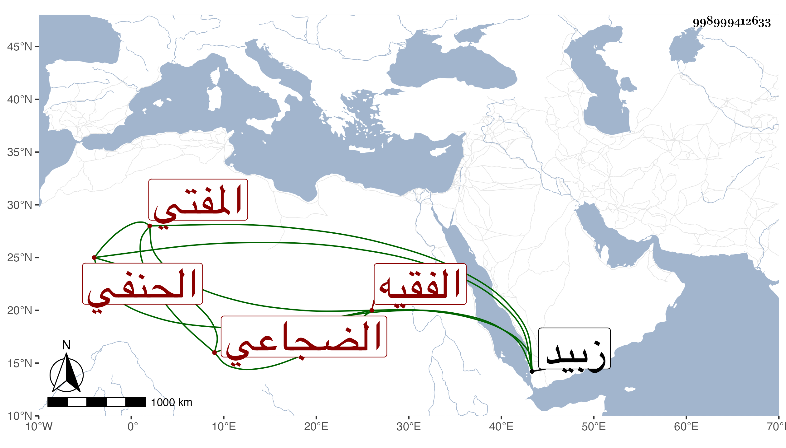

0902Sakhawi.DawLamic.ITO20230111-ara1.EIS1600.998999412633
Biography ID: 998999412633
77
أبو بكر بن البرهان الضجاعي الفقيه الحنفي المفتي . شاعر وقته بلا منازعة بل له مؤلف جيد في الحساب ومقدمة للقراء السبعة في ثلاثين جزءا كتبها بالذهب والفضة ووقفها بمسجد الأشاعرة من زبيد وهو ممن مدح الطيب الناشري وفي ترجمته أفاد ما ذكرناه العفيف الناشري ولم أعلم متى مات ولا زيادة على ما رأيته عنده .
